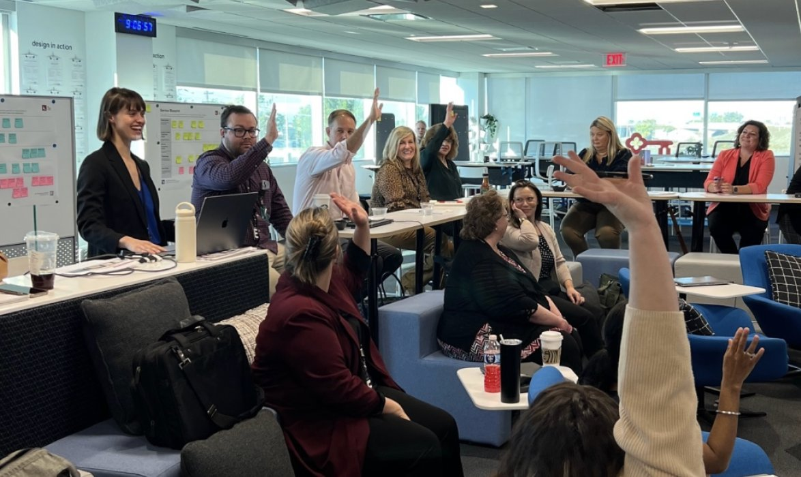
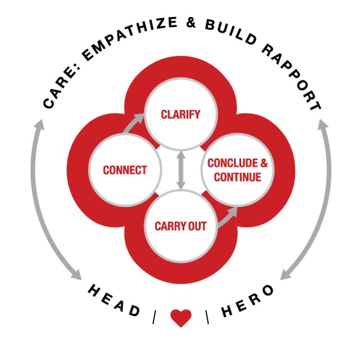
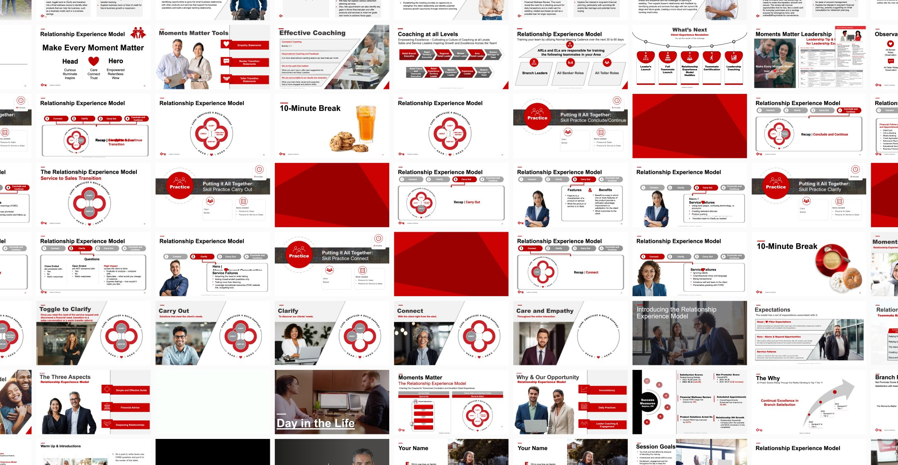

When every banker is on their own
A major retail bank was grappling with inconsistent client experiences across its branch network. Leadership understood that the banker-client relationship was a primary differentiator in a competitive market, but the quality of those interactions varied significantly from branch to branch and banker to banker.
The root of the problem was not motivation or talent. Bankers had no shared language, no common model, and a fragmented toolkit to draw from. Each person was navigating client interactions on their own. The result:
- Inconsistent client experiences with no standard for what "great" looked like
- Training materials that were disconnected and difficult to apply in the moment
- Leadership without a common framework to coach to
As Project Lead and Service Designer, I was asked to scope and deliver a solution within 4 months that could scale across the full branch network.

The fragmented toolkit bankers were navigating, a key driver of inconsistency.
Learning from the people already doing it well
The research question was deliberately reframed: rather than asking what bankers should do differently, I went looking for what the best bankers were already doing that others were not. I recruited and led 14 in-depth interviews with bankers nominated for creating exceptional client experiences, selected across a range of roles, geographies, and tenure levels:
- 6 Personal Bankers, 2 Private Client Bankers, 2 Tellers, 4 Branch Managers
- Spanning 6 states: IN, OH, ME, PA, VT, WA
- Tenure from 9 months to 24 years
Through narrative analysis, I identified 5 core mindsets that consistently separated high performers from their peers. These were not behaviors to prescribe, but ways of thinking that shaped every aspect of how great bankers showed up with clients.
| Successful teammates think about… | Rather than… |
|---|---|
| Helping their clients | Selling to clients |
| Relying on their team's expertise | Relying on just their own expertise |
| The interaction in and out of the branch | The interaction just in the branch |
| Creating unique experiences | Following just expected norms |
| Discovering needs | Fulfilling wants |
From insight to model
The project involved two major cross-functional workshops. The first brought together stakeholders from Sales Enablement, L&D, Corporate Communications, and Marketing to map the current state through service blueprinting, building a shared picture of what was and was not working before anyone started designing solutions.
With alignment on the problem, the 5 mindsets from the research became the foundation for design. The second workshop focused on ideation and convergence: I facilitated the group through 20+ versions of a conversational model, pressure-tested 3 candidates, and refined the final version into a framework any banker could internalize and apply.
"Lauren did an amazing job. She demonstrated a high degree of originality and creativity and helped us explore new paths on our client experience model. I appreciated her leadership and her ability to build rapport quickly with our partners and leaders."
— Victor Aranda, SVP Employee Experience
Cross-functional stakeholders during one of two workshops.
The Relationship Experience Model
The final model is built around 5 C's: Care, Connect, Clarify, Carry Out, and Conclude and Continue. Care sits at the center as the overarching mindset, the stance of empathy and rapport-building that frames every other step in the interaction. The remaining four provide structure for the conversation itself.
The model was not designed to be a script. It was designed to be internalized, making explicit what the best bankers were already doing intuitively, in a form that could be taught, practiced, and coached to consistently.

The final Relationship Experience Model.
To support the network-wide rollout, I partnered with Learning and Development to design a full training curriculum: facilitator guides, role-play scenarios, skill practice modules, and leadership coaching tools. The program was built to be delivered by branch leaders without dependence on a central team, which was essential for scaling across 900+ locations in a 4-month window.

Training curriculum delivered across 900+ branches.
Measurable impact within 2 months of pilot
Before the network-wide rollout, the model was piloted in a single market to validate the training approach and measure efficacy. Piloting first was a deliberate design decision: it created space to iterate on the curriculum with real data before committing to full-scale implementation. Results from the pilot market were strong across every tracked metric.
On the value of seeing the work in context
This project reinforced something I now build into every research plan: interview data and observational data answer different questions. Our interviews surfaced the mindsets and mental models of great bankers with real depth. What they could not give us was a window into the physical environment, the in-the-moment workarounds, and the edge cases that only emerge when you are watching someone do the actual work. In a future engagement of this scope, pairing ethnographic interviews with in-branch observation from the start would produce a richer and more complete picture of the problem.